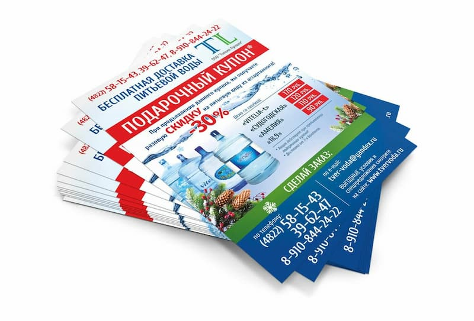
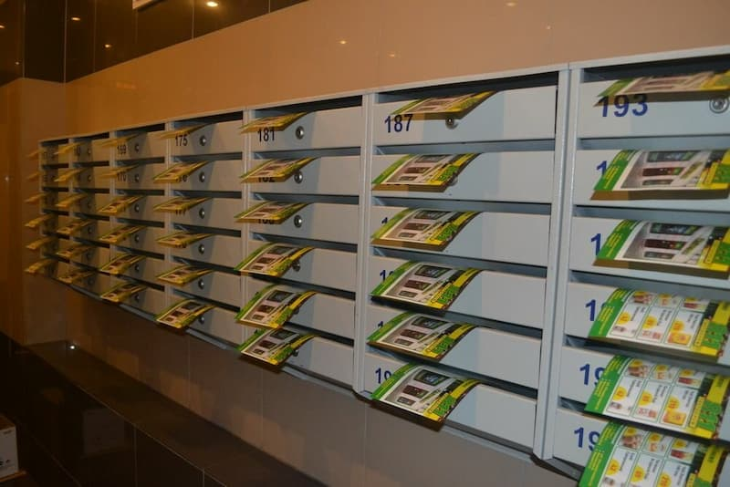
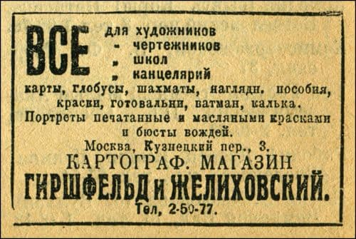
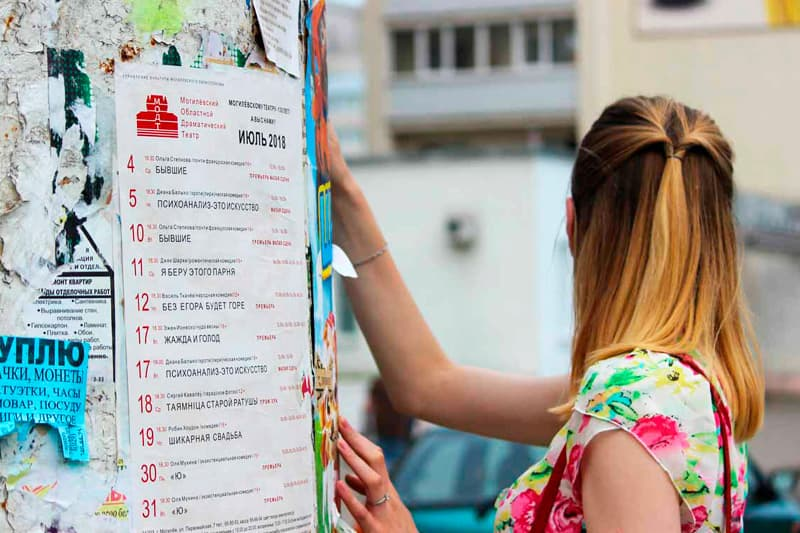
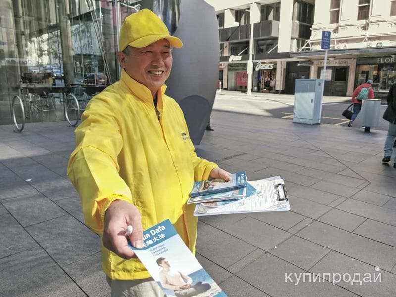

Листовка — это один из самых эффективных инструментов печатной рекламы, который помогает донести информацию о товарах, услугах или мероприятиях до целевой аудитории. В современном мире, где digital-маркетинг занимает лидирующие позиции, печатная реклама не теряет своей актуальности и продолжает оставаться мощным инструментом продвижения.
Листовка — это один из самых эффективных инструментов печатной рекламы, который помогает донести информацию о товарах, услугах или мероприятиях до целевой аудитории. В современном мире, где digital-маркетинг занимает лидирующие позиции, печатная реклама не теряет своей актуальности и продолжает оставаться мощным инструментом продвижения.

Интересно, что первые листовки появились еще в Средние века. В 15 веке, с изобретением печатного станка Иоганном Гутенбергом, листовки стали массово распространяться по Европе. Они использовались для информирования населения о важных событиях, религиозных проповедях и даже политических манифестах. Сегодня листовки эволюционировали, но их основная функция — донесение информации до широкой аудитории — осталась неизменной.


Рекламные листовки используются в различных сферах:
Типография «Лазурь» предлагает выгодные условия для оптовых заказчиков. Мы способны производить до 3 миллионов листовок в сутки, что делает нас надежным партнером для крупных рекламных кампаний.

Наши преимущества:
Не упустите возможность привлечь новых клиентов с помощью профессиональных листовок от типографии «Лазурь». Свяжитесь с нами прямо сейчас, и мы поможем воплотить ваши рекламные идеи в жизнь!
Готовы обсудить ваш проект? Оставьте заявку на нашем сайте или позвоните по телефону. Мы предложим оптимальное решение для вашего бизнеса.